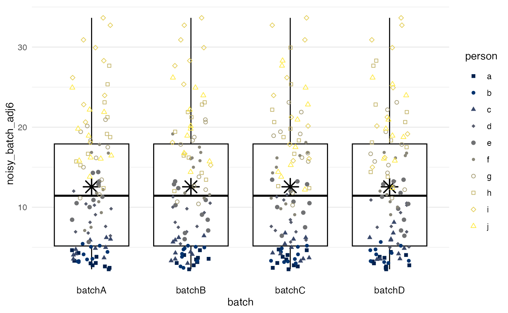
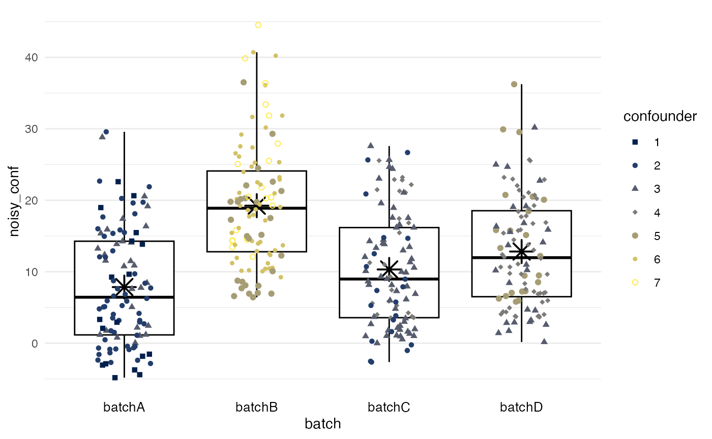

Installation
Currently, the development version of batchtma can be installed from GitHub using:
# install.packages("remotes") # The "remotes" package needs to be installed library(remotes) remotes::install_github("stopsack/batchtma")
To have vignettes like this current site be available offline via, e.g., vignette("batchtma"), modify the last commend:
remotes::install_github("stopsack/batchtma", build_vignettes = TRUE)
Set up and plot example data
We load the batchtma package and, for convenience with data handling and plotting, the tidyverse package:
We construct a toy dataset of 10 individuals (e.g., tumors), each with 40 measurements (e.g., cores on tissue microarrays) per batch. Unlike perhaps in the real world, for each individual tumor, we also have measurements on all the other batches.
set.seed(123) # for reproducibility df <- tibble( # Batches: batch = rep(paste0("batch", LETTERS[1:4]), times = 100), batchnum = rep(c(1, 5, 2, 3), times = 100), # Participants: person = rep(letters[1:10], each = 40), # Instead of a confounder, we will use a random variable for now: random = runif(n = 400, min = -2, max = 2), # The true (usually unobservable biomarker value): true = rep(c(2, 2.5, 3, 5, 6, 8, 10, 12, 15, 12), each = 40), # The observed biomarker value with random error ("noise"): noisy = true + runif(max = true / 3, n = 400) * 4) df #> # A tibble: 400 x 6 #> batch batchnum person random true noisy #> <chr> <dbl> <chr> <dbl> <dbl> <dbl> #> 1 batchA 1 a -0.850 2 4.63 #> 2 batchB 5 a 1.15 2 2.37 #> 3 batchC 2 a -0.364 2 4.41 #> 4 batchD 3 a 1.53 2 3.54 #> 5 batchA 1 a 1.76 2 3.05 #> 6 batchB 5 a -1.82 2 3.20 #> 7 batchC 2 a 0.112 2 3.88 #> 8 batchD 3 a 1.57 2 2.22 #> 9 batchA 1 a 0.206 2 2.90 #> 10 batchB 5 a -0.174 2 3.82 #> # … with 390 more rows
We plot the biomarker values (y-axis) by batch (x-axis), using the plot_batch function. Color/shape symbolizes which participant/tumor the measurements came from. Boxes span from the 25th to the 75th percentile (interquartile range); thick lines indicate medians; asterisks indicate means.
df %>% plot_batch(marker = noisy, batch = batch, color = person)
Add batch effects
We add systematic differences between batches such that there is differential measurement error between batches in terms of mean and variance. As shown above, true values were the same beyond random error.
df <- df %>% # Multiply by batch number to differentially change variance by batch, # divide by mean batch number to keep overall variance the same: mutate(noisy_batch = noisy * batchnum / mean(c(1, 5, 2, 3)) + # Similarly, change mean value per batch, keeping overall mean the same: batchnum * 3 - mean(c(1, 5, 2, 3) * 3)) df %>% plot_batch(marker = noisy_batch, batch = batch, color = person)
Perform batch effect adjustment without confounders
Simple means
method = simple calculates the mean for each batch and subtracts the difference between this mean and the grand mean, such that all batches end up having a mean equivalent to the grand mean. Differences in variance between batches will remain, if they exist (as in this example).
df %>% adjust_batch(markers = noisy_batch, batch = batch, method = simple) %>% plot_batch(marker = noisy_batch_adj2, batch = batch, color = person)
Means from marginal standardization
method = standardize performs marginal standardization by fitting a linear regression model for biomarker values with batch and confounders as predictors, and obtains the marginal means per batch if they had the same distribution of confounders. Differences between these marginal means and the grand mean are subtracted as in method = simple. In this example, the confounder is a random variable, and the results are essentially the same as for method = simple.
df %>% adjust_batch(markers = noisy_batch, batch = batch, method = standardize, confounders = random) %>% plot_batch(marker = noisy_batch_adj3, batch = batch, color = person)
Inverse-probability weighting
method = ipw predicts the probability of a measurement being from a specific batch, given the confounders. Mean differences between batches are obtained from a marginal structural model with stabilized inverse-probability weights and then used as in the two preceding methods. Again, the confounder is merely a random variable in this example.
df %>% adjust_batch(markers = noisy_batch, batch = batch, method = ipw, confounders = random) %>% plot_batch(marker = noisy_batch_adj4, batch = batch, color = person)

Quantile regression
method = quantreg, unlike the three preceding mean-only methods, addresses two distinct properties of batches: the “offset” values (a lower quantile), potentially reflective of background signal, and an inter-quantile range, potentially reflective of the dynamic range of the measurement. By default, the first and third quartile are used.
df %>% adjust_batch(markers = noisy_batch, batch = batch, method = quantreg, confounders = random) %>% plot_batch(marker = noisy_batch_adj5, batch = batch, color = person)
Quantile normalization
method = quantnorm performs quantile normalization: values are ranked within each batch, and then each rank is assigned the mean per rank across batches. Quantile normalization ensures that all batches have near-identical biomarker distributions. However, quantile normalization does not allow for accounting for confounders.
df %>% adjust_batch(markers = noisy_batch, batch = batch, method = quantnorm) %>% plot_batch(marker = noisy_batch_adj6, batch = batch, color = person)

Perform batch effect adjustment in the presence of confounding
Set up example data with confounding present
set.seed(123) # for reproducibility df <- df %>% # Make confounder associated with batch mutate(confounder = round(batchnum + runif(n = 200, max = 2)), # Make biomarker values associated with confounder noisy_conf = noisy + confounder * 3 - mean(confounder) * 3, # Add batch effects to confounded biomarker values noisy_conf_batch = noisy_conf * batchnum / mean(batchnum) + batchnum * 3 - mean(batchnum) * 3) df %>% plot_batch(marker = noisy_conf_batch, batch = batch, color = confounder)

Batch effect adjustment ignoring confounding: Quantile regression
df %>% adjust_batch(markers = noisy_conf_batch, batch = batch, method = quantnorm) %>% plot_batch(marker = noisy_conf_batch_adj6, batch = batch, color = confounder)

Quantile regression
df %>% adjust_batch(markers = noisy_conf_batch, batch = batch, method = quantreg, confounders = confounder) %>% plot_batch(marker = noisy_conf_batch_adj5, batch = batch, color = confounder)